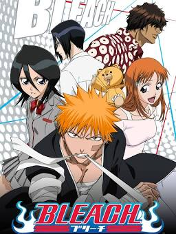
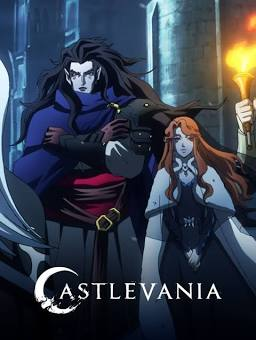
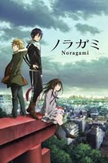
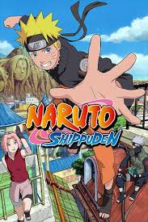

|
|
The Anime Zone |
|
|
The Anime Zone |
Action Genre
 | Tokyo Ghoul Episodes: 12 Rating : ☆7.83/10 |
Tokyo has become a cruel and merciless city—a place where vicious creatures called “ghouls” exist alongside humans. The citizens of this once great metropolis live in constant fear of these bloodthirsty savages and their thirst for human flesh. However, the greatest threat these ghouls pose is their dangerous ability to masquerade as humans and blend in with society.Tokyo Ghoul follows Ken Kaneki, a shy, bookish college student, who is instantly drawn to Rize Kamishiro, an avid reader like himself.
|  | Bleach Episodes: 366 Rating : ☆7.80/10 |
Ichigo Kurosaki is an ordinary high schooler—until his family is attacked by a Hollow, a corrupt spirit that seeks to devour human souls. It is then that he meets a Soul Reaper named Rukia Kuchiki, who gets injured while protecting Ichigo's family from the assailant. To save his family, Ichigo accepts Rukia's offer of taking her powers and becomes a Soul Reaper as a result.As Ichigo and his comrades get used to their new duties and support each other on and off the battlefield, the young Soul Reaper soon learns that the Hollows are not the only real threat to the human world.
|  | Castlevania Episodes: 22 Rating : ☆8.10/10 |
Castlevania is a web series based on the 1989 video game Castlevania III: Dracula’s Curse by Konagi. It is written the best-selling author Warren Ellis. At the heart of the plot is Trevor Belmont, who is defending the nation of Wallachia from Dracula and his minions. He is the last surviving member of the Belmont clan. The grief-crazed Dracula wants to take revenge on humanity for the death of his wife.A vampire hunter fights to save a besieged city from an army of otherworldly creatures controlled by Dracula.
 | Naruto Episodes: 220 Rating : ☆7.88/10 |
Moments prior to Naruto Uzumaki's birth, a huge demon known as the Kyuubi, the Nine-Tailed Fox, attacked Konohagakure, the Hidden Leaf Village, and wreaked havoc. In order to put an end to the Kyuubi's rampage, the leader of the village, the Fourth Hokage, sacrificed his life and sealed the monstrous beast inside the newborn Naruto.Now, Naruto is a hyperactive and knuckle-headed ninja still living in Konohagakure.Shunned because of the Kyuubi inside him, Naruto struggles to find his place in the village, while his burning desire to become the Hokage of Konohagakure.
|  | Noragami Episodes: 12 Rating : ☆8.04/10 |
In times of need, if you look in the right place, you just may see a strange telephone number scrawled in red. If you call this number, you will hear a young man introduce himself as the Yato God.Yato is a minor deity and a self-proclaimed "Delivery God," who dreams of having millions of worshippers.Just as things seem to be looking grim for the god, his fortune changes when a middle school girl, Hiyori Iki, supposedly saves Yato from a car accident, taking the hit for him. Remarkably, she survives, but the event has caused her soul to become loose and hence able to leave her body
 | One Punch Man Episodes: 12 Rating : ☆8.62/10 |
The seemingly ordinary and unimpressive Saitama has a rather unique hobby: being a hero. Now, Saitama is incredibly powerful, so much so that no enemy is able to defeat him in battle. All it takes to defeat evildoers with just one punch has led to an unexpected problem—he is no longer able to enjoy the thrill of battling and has become quite bored.And thus begins the story of One Punch Man, an action-comedy that follows an eccentric individual who longs to fight strong enemies that can hopefully give him the excitement he once felt and maybe he'll become popular in the process.
|  | Naruto Shippuden Episodes: 500 Rating : ☆8.15/10 |
It has been two and a half years since Naruto Uzumaki left Konohagakure, the Hidden Leaf Village, for intense training following events which fueled his desire to be stronger.Although Naruto is older and sinister events loom on the horizon, he has changed little in personality,still childish though he is now far more confident and possesses an even greater determination to protect his friends and home. Come whatever may, Naruto will carry on with the fight for what is important to him, even at the expense of his own body, in the continuation of the saga about the boy who wishes to become Hokage